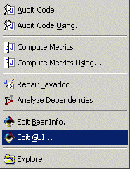
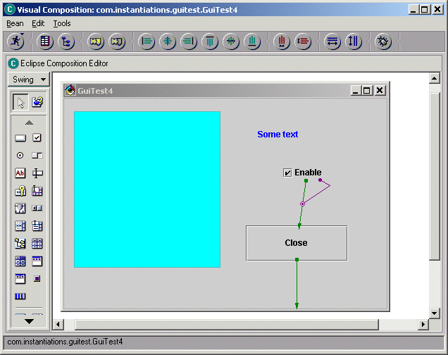

VCE Bridge
This feature requires that VA Assist be installed into VisualAge Java. VA Assist can be downloaded and installed from here.
 
Eclipse does not include a GUI builder. The VCE Bridge feature allows you to access the VA Java VCE (Visual Composition Editor) from within Application Developer or Eclipse by simply clicking on a class or compilation unit and selecting the "Edit GUI" command. Technically, this involves quite a bit of cooperative magic between Application Developer/Eclipse and VA Java.
1) If VA Java isn't running, Application Developer/Eclipse will start it up in "slave mode"
- any version of VA Java will do, so you could install VA Java Entry for this purpose alone
- VA Assist needs to be installed in VA Java for all of the VA Java pieces to work. VA Assist should be configured to point to your Application Developer/Eclipse root directory
2) Once started, a bi-directional socket connection is established between VA Java and Application Developer/Eclipse
- if VAJ was already running, it will establish communications with that VA Java instance
3) Eclipse sends the code for the class to VA Java
4) The VA Java VCE opens up on the code
- the layout info is retrieved from the class's getBuilderData() method
5) You edit the class using the normal VCE tools
- you are limited to widgets known to VA Java 3.x/4.x (and JDK 1.2.2 features)
- the tool is presented "standalone" and doesn't provide access to any other VA Java facilities/browsers
6) When you are done editing, the new code is generated and sent back over to Application Developer/Eclipse
7) If you click on the VCE run or debug buttons, the code will be generated, sent to Application Developer/Eclipse and then run in that context
8) When Application Developer/Eclipse shuts down, it will automatically shutdown VA Java as well
The obvious limitation here is that you are limited to JDK 1.2.2 features. Since this facility is meant to "bridge" folks from VA Java into Application Developer/Eclipse until the corresponding Eclipse facility is released, it should be viewed as short term and tactical in nature. Once an Application Developer/Eclipse native VCE is released, you would no longer need to use this VCE Bridge feature.
All of the CodePro / VA Assist integration features may be configured via the
"CodePro | VA Assist"
options page. On the VA Java side, the Application Developer/Eclipse integration features may be configured
via the "VA Assist | Application Developer/Eclipse" options page.
The VA Java GUI builder only knows about types within its environment.
If you want to use classes that you have created in Eclipse, you will need
to import them into the VA Java environment you want to use. The direct
import from Eclipse option that has been added to the Import
Wizard by VA Assist
should make that easy. If you plan to do this frequently, you might want
to set up an Eclipse
Import set on the VA Java side and use the Task
Scheduler to have it run automatically at VA Java startup. That way,
whenever you invoke the VCE Bridge it will
automatically import your new/changed beans and make them available for
use.
- Do you have VA Assist installed into VA Java. What version of VA Assist are you using?
- Is CodePro configured to talk to your VA Java installation?
../preferences/preferences_vaassist.html - Is VA Assist in VAJ configured to know about your Eclipse installation?
Sending us a screen shot of both of the above screens in your
environment might help us identify the problem. Are any exceptions
recorded either into the VA Java "ide\program\va-debug.log"
file, the Eclipse "<workspace>\.metadata\.log" file or the
"<workspace>\.metadata\.plugins\com.instantiations.assist.eclipse.core\ws-debug.log"
file? If so, please send us those files. If none are recorded, you can try
turning on the "log communications" options in both products
which will cause communication status messages to be recorded to the log
files which should help us analyze the problem.